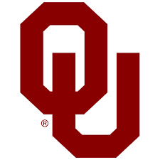
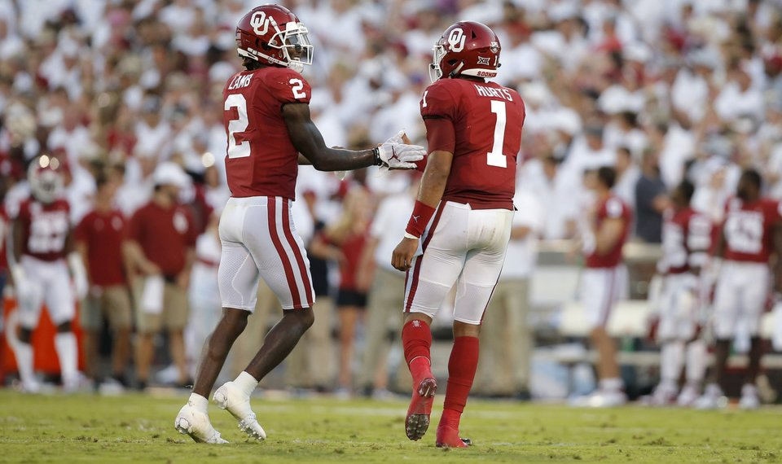
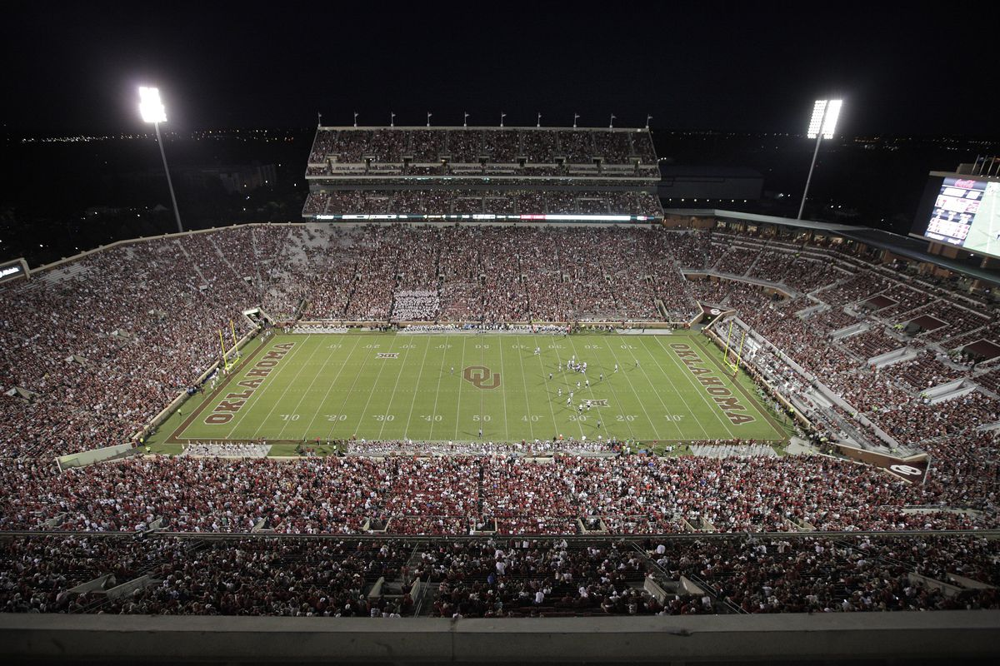

<DOCTYPE!>
<HTML>
  <head>
    <script>
    function myFunction(){
      var x = document.getElementById("myImage");
      if (x.style.display === "none") {
        x.style.display = "block";
      } else {
        x.style.display = "none";
      }
    }
    function myFunction2(){
      var x = document.getElementById("myImage2");
      if (x.style.display === "none") {
        x.style.display = "block";
      } else {
        x.style.display = "none";
      }
    }
    function myFunction3(){
      var x = document.getElementById("myImage3");
      if (x.style.display === "none") {
        x.style.display = "block";
      } else {
        x.style.display = "none";
      }
    }
    </script>
    <body style="background-color: maroon;"><div id = "text" style = "color: white;">
<h1>Oklahoma University</h1><br/>
<button onclick="myFunction();">Logo</button><br/>


<h1>Team</h1>
<button onclick="myFunction2();">Team</button><br/>
<br/>
<a>Oklahoma just got into the CFP with a big win over a very strong Baylor team that was ranked 7 going into the Big 12 Championship.  Jalen Hurts will most likely have a seat at the Heisman Ceremony.  Also WR Ceedee Lamb is ridiculous and also deserves a seat.  He will most likely be picked top 5 in the Draft.  If one of them wins it'll be three years in a row for Oklahoma to win heisman.  They will be facing off against LSU in the Peach Bowl.
  <a/>

<h1>Gaylord Family-Oklahoma Memorial Stadium</h1>
<button onclick="myFunction3();">Stadium</button><br/>
<br/><br/>
<a>Where will you find one the most unique mascots in college football? Look no further than in the heart of America in Norman, Oklahoma where the Sooner Schooner brings the crowd at Memorial Stadium to its feet each time Oklahoma scores. Pulled by two white ponies, the Sooner Schooner is a miniature version of the Conestoga wagon used by settlers of Oklahoma.  This pumps the hometown crowd up. <a/><br/><br/>
<iframe width="560" height="315" src="https://www.youtube.com/embed/WD6aLj8xZds" frameborder="0" allow="accelerometer; autoplay; encrypted-media; gyroscope; picture-in-picture" allowfullscreen></iframe>
